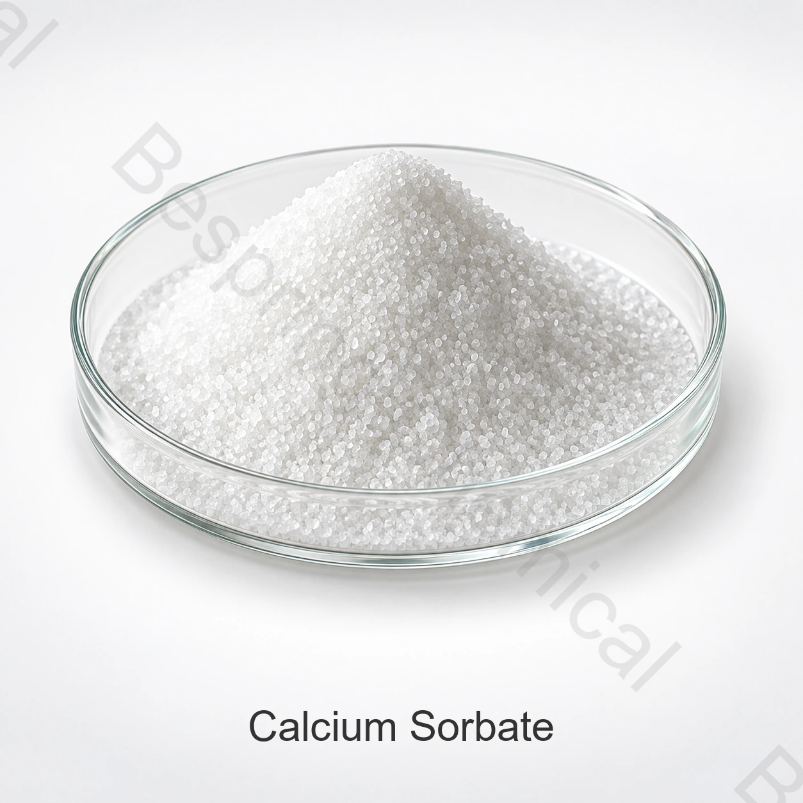

食品級山梨酸鈣供應商
請求E203身份，含量測定基礎，水分或乾燥失重，汙染物，顆粒形式和現行的食品級文件.
食品級成分 · 山梨酸鹽防腐劑和防黴成分 · INS 203
食品級山梨酸鈣，INS 203,是山梨酸的鈣鹽，用作當地法規允許的食品類別中的防腐劑或防黴成分。

產品圖片 · 訂購時請確認等級與包裝
分享應用、關鍵指標限值、試驗方法、數量、包裝和目的地。
等級食品級，須評估具體貨源資質
包裝確認袋或桶，襯裡，淨重和托盤
集裝箱裝載請根據所選包裝和目的地確認
批次證明需要現行規格和COA
產品概述
食品級山梨酸鈣，INS 203,是山梨酸的鈣鹽，用作當地法規允許的食品類別中的防腐劑或防黴成分。
對於採購，“食品級”必須支援現行具體貨源的規格，合適的製造和品質文件，和批次COA.最終用途取決於完整的配方、預期功能和目的地市場的規則。
歐盟委員會條例(EU)2018/98將山梨酸鈣(E 203)從歐盟授權食品添加劑清單中刪除。INS編號或歷史規格並不確立歐盟食品使用許可。對於其他目的地，請在申請供應建議書之前核實現行有關確切食品類別的規則。
閱讀歐盟委員會法規(EU) 2018/98。不要從這一歐盟特定限制中推斷出全球禁止或批准。
採購核查清單
使用這些資格點時，比較中國供應商，製造商來源，分銷商報價，批次報價或樣品.
請求E203身份，含量測定基礎，水分或乾燥失重，汙染物，顆粒形式和現行的食品級文件.
提供準確的食品類別、產品 pH 值、目標生物、製程、劑量範圍和目標市場。
驗證培養物相容性、pH值、分散度、感官影響、合法使用和保質期效能。
比較溶解度、陽離子貢獻、可用性、加工行為和當地監管狀況。
應用評估
這些是應用篩選領域，而不是普遍批准或劑量建議。確認成品食品的合法用途和效能。
發酵乳製品與優格應評估菌種相容性、pH 值及目標市場的許可用途。
濃縮鳳梨汁等水果系統須評估溶解度、pH 值及許可用途。
可作為針對酵母和黴菌的經過驗證的儲存計劃的一部分進行評估。
粉末的相容性、分佈、水分控制和溶解度應在擴大規模之前進行測試。
技術規格
採購時請索取具體供貨等級的定量規格及批次分析證明（COA），並商定分析方法與驗收要求。
可橫向滑動或使用鍵盤查看完整表格
| 檢測專案 | 提供參考 |
|---|---|
| 產品等級 | 食品級(供貨) |
| 分子式 | C12H14CaO4 |
| CAS 號 | 7492-55-9 |
| 食品添加劑編號 | INS 203 |
| 品質指標 | 依供貨等級的簽署規格商定 |
| 所提供的用途說明 | 防腐劑及防黴劑 |
| 提供應用示例 | 發酵乳製品、酸奶和濃縮菠蘿汁 |
資料說明： 採購規格應列明含量、水分、酸度／鹼度、山梨酸、金屬、微生物及粒徑要求；包裝與 MOQ 依具體供貨方案商定。
技術選型
獲取定量含量測定、雜質、物理和微生物標準前的來源批准。
山梨酸鈣與山梨酸鉀在實際製程和pH環境下的比較。
確認INS 203是否允許用於準確的食品類別和目的地市場。
驗證防腐劑的效能與實際配方、衛生、包裝和儲存條件。
採購評估支援
請求現行簽署的規格或 TDS、SDS、測試方法、代表性 COA 和批次 COA。
核實適用的食品安全、品質、猶太教、清真和現場文件，以確定準確的等級和來源。
參閱 FAOLEX 收錄的山梨酸鈣組成規格, 然後應用目的地市場的規則來確定成品食品。
儲存與操作
採購常見問題
山梨酸鈣用於食品製程中，具有良好的山梨酸防腐劑和防黴成分功能。必須確認合法用途、劑量和效能，以適用於準確的食品和目標市場。
山梨酸鈣在這裡由CAS 7492-55-9和INS 203識別。確認身份和提供的表格上現行的規格。
請求現行簽署的規格、商定的測試方法、代表性COA和現行批次COA。在批准前解決每個缺失單位、比較劑或粒徑要求。
確認袋或桶，襯裡，淨重和托盤。在報價中確認食品接觸襯裡、托盤裝載、標記和集裝箱裝載。
提供食品用途、目標標準和臨界限值、數量、包裝、目的地、證書、國際貿易術語和要求的交貨日期。
按規格要求採購
分享相關批次供應提案的應用、目標等級和限制、數量、包裝、目的地和所需文件。
請提供產品等級和目的地市場，以便確認適用於該訂單的資料。
外部參考資料不等於批次分析證書或百泉產品規格書。